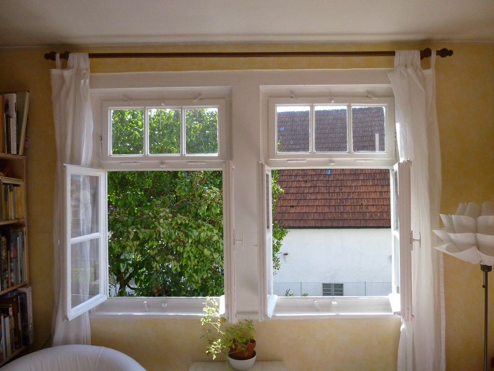

Cucine, porte, finestre, librerie, arredi su misura: con ceck prendi le misure sul telefono, il preventivo esce dal tuo listino e la sera sai se il lavoro ti sta facendo guadagnare.
Provalo gratis adesso →
Foto con le misure, piantina della stanza, preventivo dal listino, ore e rapportino.
Scritte sul cartone, sul muro, sul telefono… e poi non le trovi più.
Due, tre, quattro ore dopo cena, a rifare sempre gli stessi conti.
Il lavoro è finito, ma quante ore ci hai messo davvero? Nessuno lo sa.
Lavori da solo: nessuno ti ricorda il campione da verniciare o il preventivo da consegnare.
Niente corsi, niente manuali. Se sai usare WhatsApp, sai usare ceck.
Fotografi la parete, la porta, la nicchia. Segni le misure con il dito direttamente sulla foto.
Il tuo listino lo carichi anche da Excel. Scegli le voci: ceck moltiplica, somma e ti dà il totale.
Il lavoro accettato va nel planning. La sera segni le ore con un dito, in un attimo.
Il falegname bravo lo sa: preparare un solo campione di verniciatura richiede il tempo di sette porte. Lo sa perché se l'è segnato. ceck se lo segna per te, lavoro dopo lavoro, e i tuoi prezzi diventano giusti.
Provalo sul tuo prossimo lavoro. Gratis, senza carta di credito.
Comincia gratis →Nato sul lavoro, da chi lavora ogni giorno con falegnami e imprese. In 7 lingue.